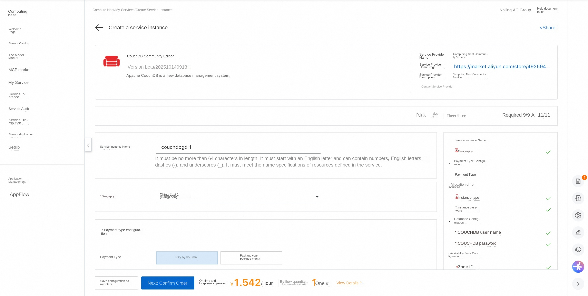
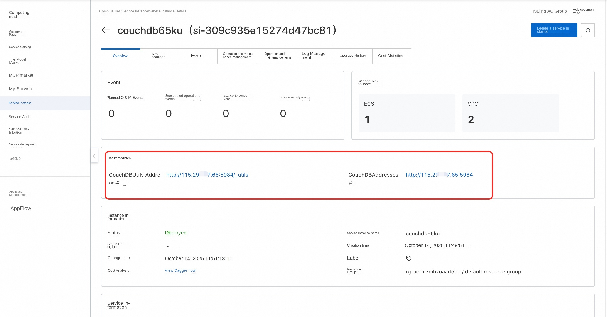
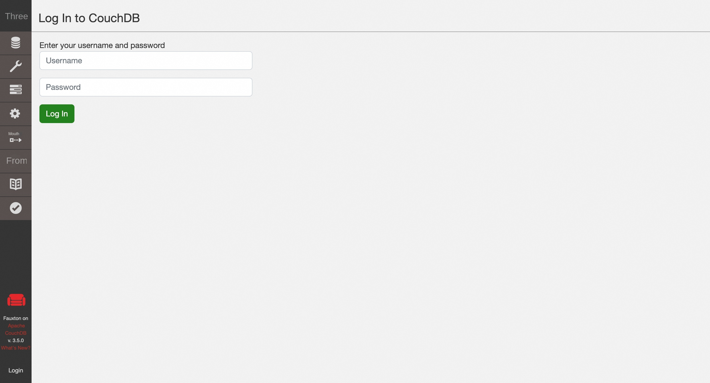

🌟Service Introduction
The CouchDB is a database that completely contains the web. Store data in JSON documents. CouchDB work well with modern web and mobile applications. CouchDB comes with a set of features, such as dynamic document conversion and real-time change notifications, which makes web development a breeze. It even comes with an easy-to-use web management console that provides services directly from the CouchDB! CouchDB have a fault-tolerant storage engine that puts the security of your data first.
🚀Deployment Process
-
Visit the Computing Nest CouchDB Community Edition Deployment Link and fill in the deployment parameters as prompted:

-
After completing the parameters, you can see the corresponding RFQ details. After confirming the parameters, click Next: Confirm Order.
-
Confirm that the order is complete and agree to the service agreement and click Create Now to enter the deployment phase.
-
Wait for the deployment to complete and enter the service instance details page.

-
Click on the service address and use the CouchDB Community Edition.

📚Guidelines for use
For more usage, please refer to the CouchDB official website document.